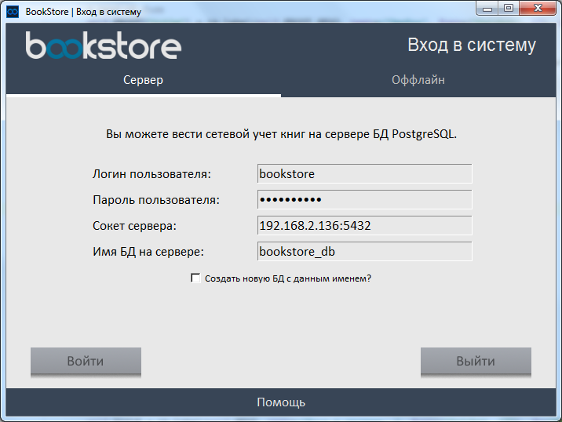
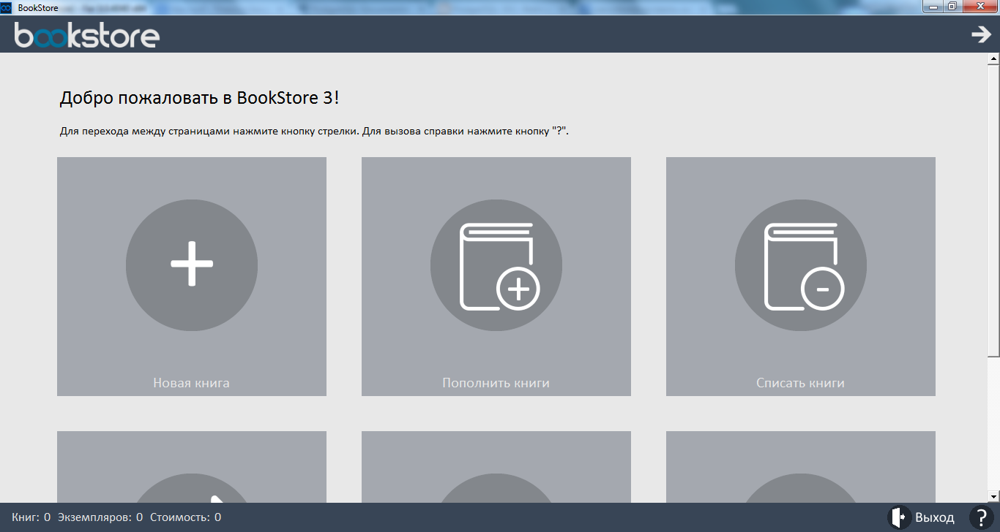

После конфигурации BookStore Вы уже можете пользоваться BookStore. При каждом запуске BookStore Вам будет вылетать окно формы входа в BookStore.

При следующем запуске BookStore после конфигурации БД (при использовании сетевого режима) система сама Вам подскажет
Ваши данные входа – логин, пароль, сокет Вашего сервера и имя той БД, которую
использует Ваш BookStore на Вашем сервере данных. Как настроить BookStore чтобы он Вам не подсказывал Ваши
конфиденциальные данные входа – читайте
здесь.
Если Вы ошиблись и вовсе не хотите сейчас использовать BookStore, вы можете
нажать «Выйти».
При неправильных данных входа (например, если Вы ошиблись в Вашем пароле),
BookStore Вам укажет на это сообщением об ошибке входа в систему.
После нажатия кнопки «Войти» Вам откроется окно BookStore. Это первая страница программы, на которой находится панель основных действий.

Все последующее описание программы пойдет о второй странице BookStore, доступной по нажатию стелки в верхнем правом углу. На данной же панели находятся основные функции BookStore.